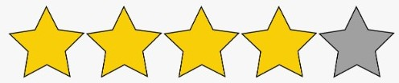

Editorial Aluz
En esta pagina encontraras todas las novedades en libros.
Calificamos, clasificamos y promocionamos toda clase de libros para todos los gustos. No te pierdas esta oportunidad de aprender sobre libros.
Desde clasicos de la literatura hasta los mas nuevos exitos. Contamos con todos los generos, desde romances que te haran suspirar pasando por aventuras llenas de accion hasta terror que te llena de adrenalina. Tambien contamos con todos los formatos, tanto digital como fisico.
Ultimos ingresos

Te Daria el Sol
Una novela muy tranquila y facil de leer. Ideal para despejarse. Una brillante historia sobre el primer amor, la familia y la traición.

Narraciones Extraordinarias
Seleccion de cuentos de Edgar Allan Poe. Transmiten al lector, a traves de atmosferas opresivas e intrincados analisis, terror, intriga, angustia y sufrimiento.